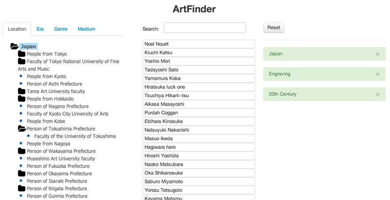

MATT THOMPSON
Discovering Japanese Artists with Artfinder
Fri Jan 31st 2014
I was lucky enough to spend the summer doing some research at the NII (National Institute of Informatics) in Tokyo. I spent three months there working on ways to browse and visualise their LODAC dataset of Japanese artists and artworks.
At the end of the summer internship, I made a browser-based art discovery tool called 'ArtFinder'.

ArtFinder
After putting the artists names and metadata through Google Translate, I created a faceted browser for Japanese artists. The idea is that you click on a tab on the left to choose a facet (location, era, genre, medium), then drill down through a hierarchy to find a specific tag for that facet. Multiple tags can be selected (they appear on the right as green boxes) and the list of artists in the middle is filtered according to the selected tags. Clicking on an artist’s name shows a list of their related tags.
The idea is that a person who is unfamiliar with Japanese art can browse through categories of artists that they do know to find similar Japanese artists.
Artfinder is available online here. It was written using Angular.js, with the tag hierarchies for the facets having been clustered using Python and Clojure.